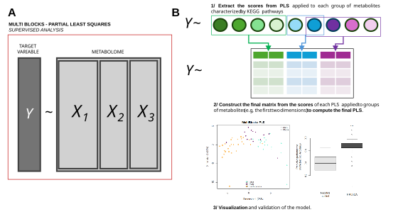
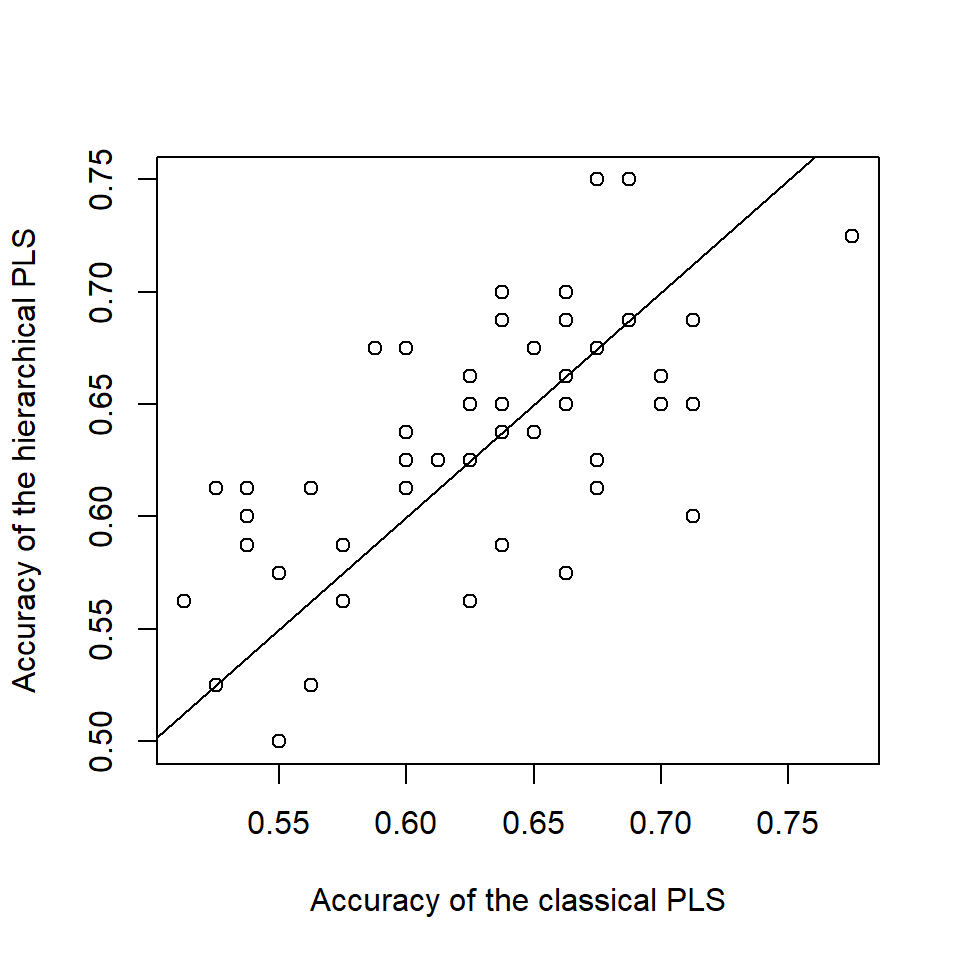
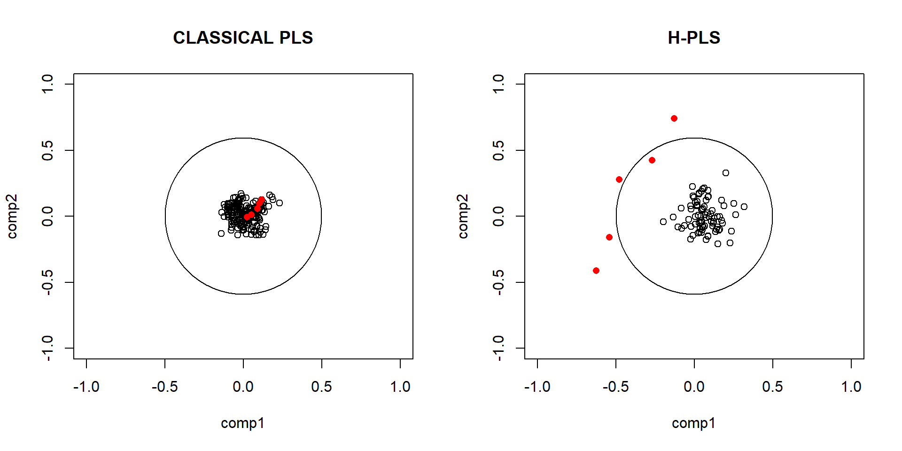

Chapter 3 Theory of Hierarchical Partial Least Square
Metabolomics data are structured into functional blocks that link individual metabolite concentrations to annotated biochemical reaction networks (from a curated database like KEGG).
Each block represents a set of metabolites belonging to a specific pathways. Hierarchical method then allow the identification of coordinated signatures, where specific pathways jointly explain the observed variance of \(Y\).
The H-PLS procedure consists of the following steps:
A PLS model is built independently for group of metabolites corresponding to a biological function (e.g., KEGG pathway) to explain \(Y\). This step consist of creating the lower level of the final model.
A final PLS model is then constructed using the individual scores obtained from all block-specific PLS models (from the lower level). This step enables the identification of physiological pathways associated with the target (clinical or environmental) variable of interest. This step is called the upper level of the model (Wold, Kettaneh, and Tjessem 1996).
This integrative approach enhances biological interpretation by directly linking metabolic perturbations to coherent cellular processes, while improving the robustness of identified biomarkers in complex pathological contexts.

In case of unsupervised analysis, we can used the
HMFA()R function from theFactoMineRpackage (Le Dien and Pagès 2003).
3.1 Why used H-(MB)-PLS?
Hierarchical (Multi-block) Partial Least Squares (H-PLS) is an extension of classical PLS designed to integrate multiple data blocks measured on the same individuals.
The main advantage of the multi-block framework is not to “amplify” weak set of variables, but rather to balance the contribution of heterogeneous data blocks in the construction of latent components (Renato 1994).
In classical PLS, when all variables are concatenated into a single matrix, blocks containing more variables or higher variance tend to dominate the estimation of latent structures. As a consequence, biologically relevant but weaker signals can be masked.
In contrast, MB-PLS explicitly models each block separately and seeks latent components that maximize the shared covariance structure across blocks and with the response variable. This leads to a more balanced representation of the underlying biological system.
To illustrate this behavior, we simulate three data blocks (you used a specific function simulate_multiblock_data()):
Block 1 (p = 80): mostly noisy variables with weak diffuse signal.
Block 2 (p = 10): small set of variables with stronger but still realistic signal.
Block 3 (p = 100) : only stochastic noise.
Y: response influenced by blocks 1 and 2, but mainly by Block 2.
We observe that blocks 1 and 2 are correlated with the response, but the signal is more associated with block 2.
## [1] 0.08857035## [1] 0.1745485We then fit two different multivariate regression models in order to compare their ability to recover the underlying structure linking predictors to the response variable \(Y\).
The first model is a classical Partial Least Squares (PLS) regression applied to the concatenated predictor matrix \([X_1 \, | \, X_2, | \, X_3]\), where all variables are treated as a single homogeneous block. This approach assumes that all predictors contribute on a common scale and does not explicitly account for the hierarchical or modular structure of the data.
The second model is a Hierarchical Partial Least Squares (H-PLS) model implemented in the C2VN R package. In this framework, predictors are explicitly partitioned into separate blocks corresponding to distinct data sources (\(X_1\), \(X_2\), and \(X_3\)). The H-PLS algorithm constructs latent components that maximize covariance both within and between blocks, while preserving the structure of each individual dataset.
3.1.1 The model performances between classic PLS and hierarchical PLS are the same.
To compare the performance of a standard PLS-DA model with the proposed hierarchical PLS-DA (H-PLS-DA), we conducted a simulation study based on 50 independent datasets generated using a multi-block structure.
Each simulated dataset consists of three blocks with different sizes and correlation structures, where only two blocks carry signal associated with the response variable, while the third block contains noise. The response is binary and derived from a nonlinear combination of variables from the informative blocks, making the classification task moderately complex.
For each iteration:
- A training set (75%) and a test set (25%) are generated.
- A classical PLS-DA model is fitted on the concatenated data from all blocks.
- A hierarchical PLS-DA (H-PLS-DA) model is applied.
Model performance is evaluated on the test set using classification accuracy derived from the confusion matrix.
The figure below shows a scatter plot comparing the accuracies obtained with both approaches across the 50 simulations. Each point corresponds to one simulated dataset, with:
the x-axis representing the accuracy of the classical PLS-DA, the y-axis representing the accuracy of the hierarchical PLS-DA.
The diagonal line indicates equal performance between the two methods.
Overall, the results show that both approaches achieve very similar predictive performance, as most points lie close to the diagonal. This suggests that, in this simulation setting, the hierarchical structure does not provide a clear advantage in terms of classification accuracy compared to a standard PLS-DA applied to concatenated data.
However, the hierarchical approach may still offer benefits in terms of interpretability and structured analysis of multi-block data, which are not captured by accuracy alone.
source("fct/H_PLSDA.R")
source("fct/simulation.R")
set.seed(12)
res.accouracy.pls = res.accouracy.Hpls = c()
for(i in 1:50){
data_sim <- simulate_multiblock_data()
# CLASSICAL MODEL
res.pls <- mixOmics::plsda(data.frame(cbind(data_sim$train$block1, data_sim$train$block2, data_sim$train$block3)), data_sim$Y_train, ncomp = 4)
res.accouracy.pls = c(res.accouracy.pls,
caret::confusionMatrix(factor(predict(res.pls, data.frame(cbind(data_sim$test$block1, data_sim$test$block2, data_sim$test$block3)))$class$max.dist[,4], levels = levels(data_sim$Y_train)), data_sim$Y_test)$overall[1])
# MULTI-BLOCKS MODEL
res.mb_pls <- H_PLSDA(data_sim$train,
data_sim$Y_train,
new.data = data_sim$test,
new.Y = data_sim$Y_test)
res.accouracy.Hpls = c(res.accouracy.Hpls, res.mb_pls$Accuracy$overall[1])
}
plot(res.accouracy.pls, res.accouracy.Hpls, xlab = "Accuracy of the classical PLS",
ylab = "Accuracy of the hierarchical PLS")
abline(0,1)
3.1.2 The model interpretability is higher in hierarchical PLS than classic PLS.
We also examine the correlation circle plots of the variables obtained from each model. These plots represent the correlations between the original variables and the latent components, providing an intuitive measure of variable contribution and importance within the multivariate model.
The classical PLS show that all the variables does not exceed a correlation more than 0.5 with the new constructed latent space. As a result, signals from smaller but informative blocks (i.e., block n°2 which is colored in red) may be diluted in the global latent space.
In contrast, the H-PLS approach explicitly accounts for the block structure during model estimation. This results in a more balanced representation of the data, where latent components capture shared variation across blocks rather than being dominated by a single dataset (Westerhuis, Kourti, and MacGregor 1998). Consequently, variables that are truly associated with the response \(Y\) are more clearly highlighted in the correlation circle representation.
We also can used th Multi-block pls from the
mixOmicsR package, which is slightly different, but could propose a very good alternative dependeing on the research question.
p1 = length(data_sim$beta[[1]])
p2 = length(data_sim$beta[[2]])
layout(matrix(c(1,2), nrow = 1))
plot(res.pls$loadings$X, xlim = c(-1, 1), ylim = c(-1, 1), main = "CLASSICAL PLS")
points(res.pls$loadings$X[(p1+1):(p1+p2),], col = "red", pch = 16)
symbols(0, 0, circles = 0.5, inches = FALSE, add = TRUE)
plot(res.mb_pls$Lower_loadings$block1, xlim = c(-1, 1), ylim = c(-1, 1), main = "H-PLS")
points(res.mb_pls$Lower_loadings$block2, col = "red", pch = 16)
symbols(0, 0, circles = 0.5, inches = FALSE, add = TRUE)